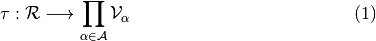
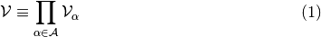

データの持ち主を 1/k 以上の確信度に絞り込めない
DB等の中のデータが誰のものか判ってしまうこと
誰かの属性データが判ってしまうこと
テーブル形式のDBの保護処理において、 “保護処理後テーブルの中に、どのデータ行に関しても同じデータ行が自身を含めk個以上存在する” = “どのデータも持ち主をk人以下に絞り込めない” ことを保証する指標。
k-匿名性に基いて、準識別子からデータの持ち主をk人以下に絞り込めぬよう、 準識別子データの抽象化や削除を行うことで、プライバシー保護を実現する。
単独でデータの持ち主を個人に特定できる属性
例: 会員ID
比較的容易にアクセスできて、しかも組合せによりデータの持ち主を個人まで特定することができる属性
例: 名前, 郵便番号, 年齢, 性別
撹乱と再構築
各情報提供者は自身のデータに意図的にランダム性を付加し、このことにより個々のデータの情報量は減少する。
逆行列の計算やベイズ推定等、撹乱の逆にあたる操作を行い、統計値のみを得る。
撹乱がなされたテーブルで個々のデータの情報量は低下していても、 統計量としては撹乱アルゴリズム事の期待される値に収束するため。
情報量の減少が大きいような撹乱であればあるほどプライバシー保護性は上がり、 マイニング精度は低下する。
データ提供者から提供されたデータの集まり
テーブル上で行として表現される、一人のデータ提供者からのデータのまとまり
各レコードを構成する値に対応する、いくつかの予め定められた項目
保護すべきテーブル
データ処理後のテーブル

以降

医療分野におけるビッグデータの活用と法律問題
Sphinx
Enter search terms or a module, class or function name.